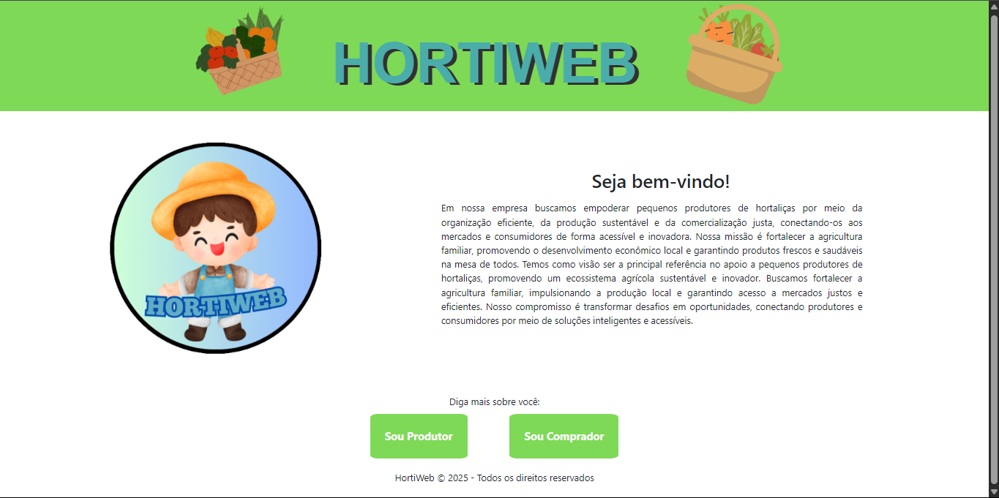
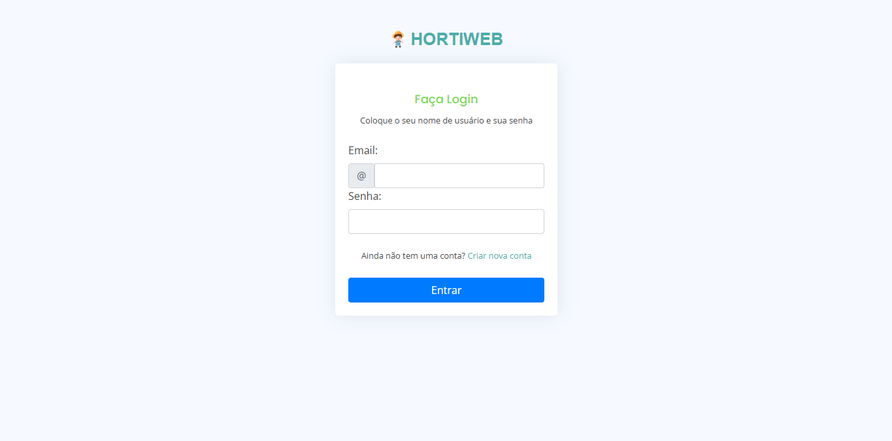
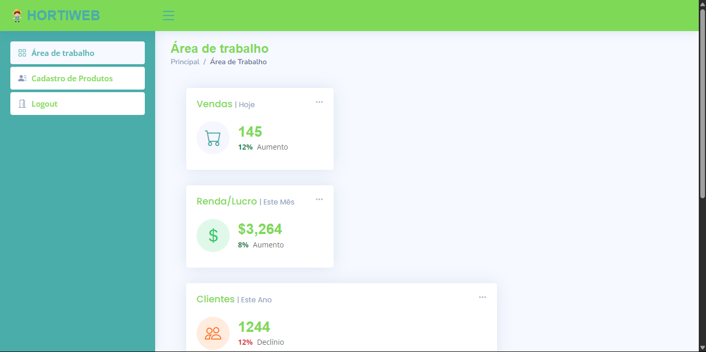
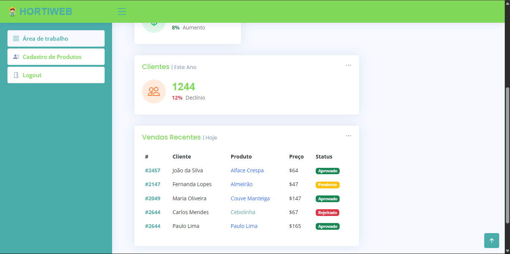
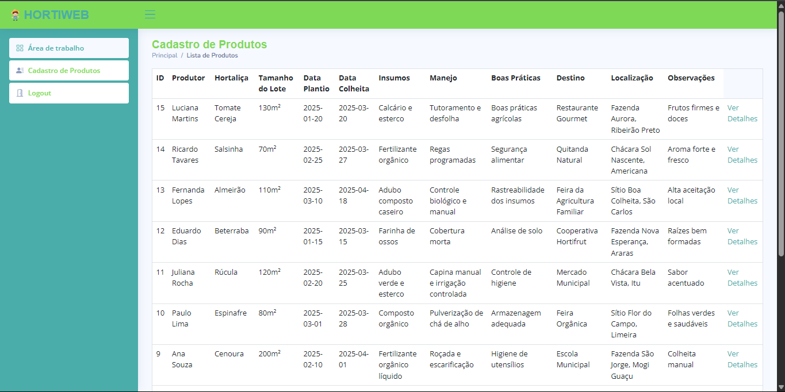
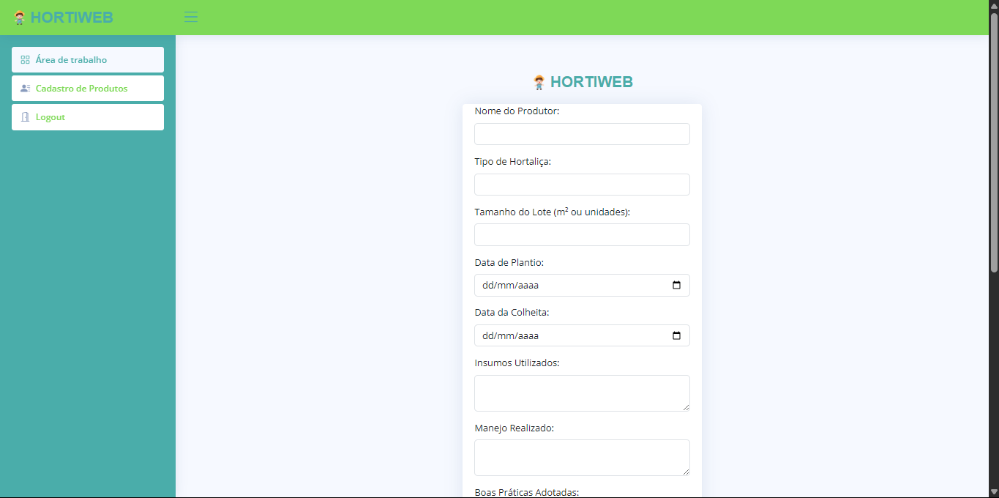
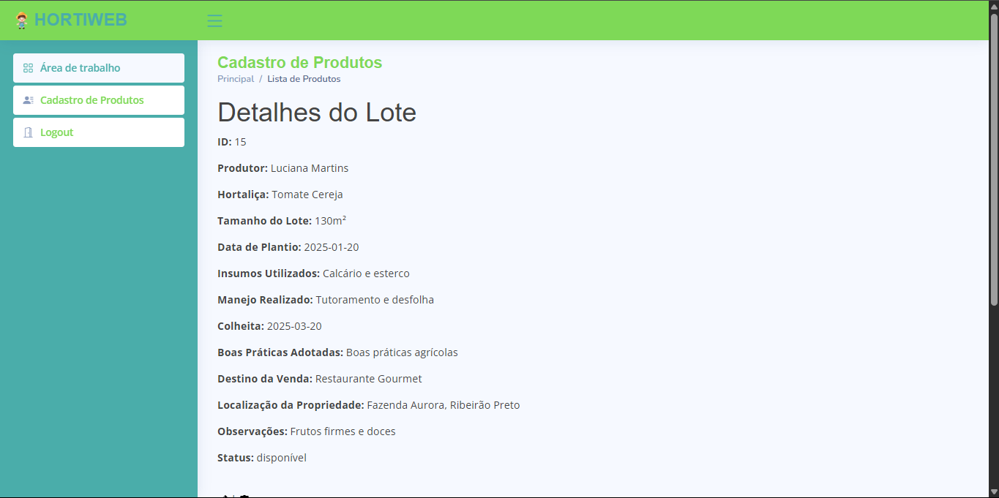
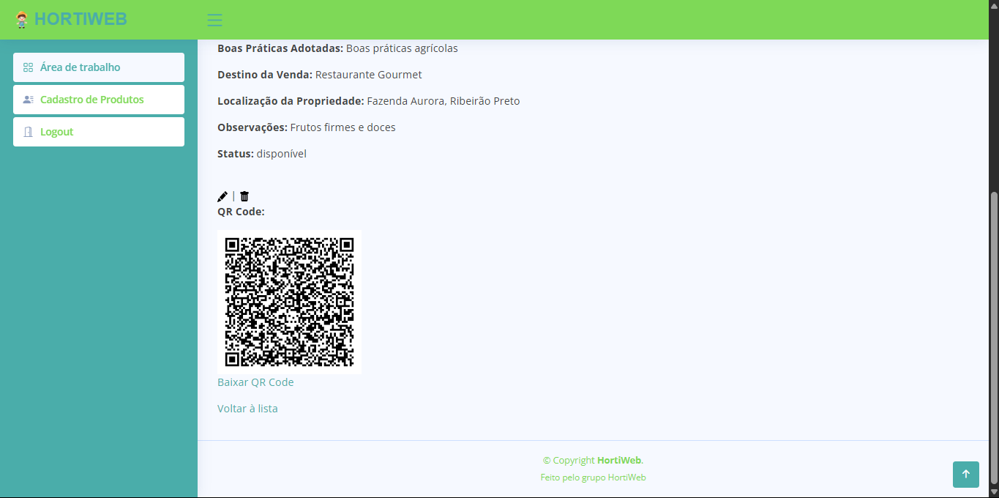
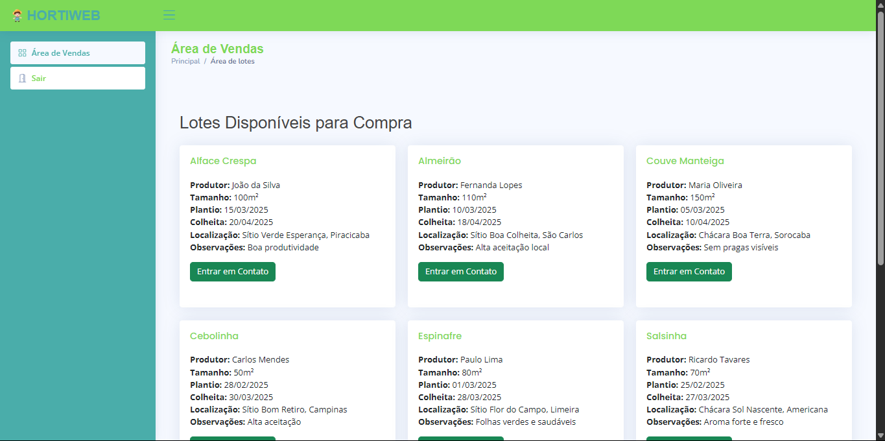

Rastreamento de Hortaliças
Plataforma para monitoramento e rastreabilidade de produtos agrícolas
Este site permite o rastreamento completo de hortaliças por meio de QR Codes. Cada lote contém informações sobre origem, produtor, insumos, práticas de manejo e destino da mercadoria. A ideia é trazer mais transparência para o consumidor e controle para o produtor.








